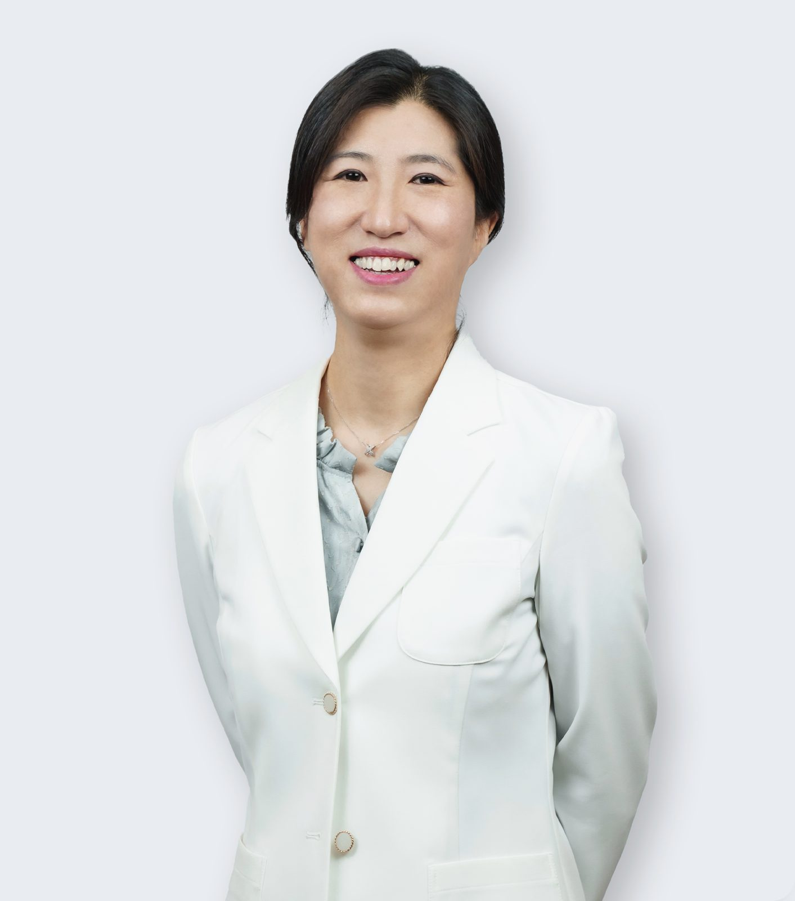
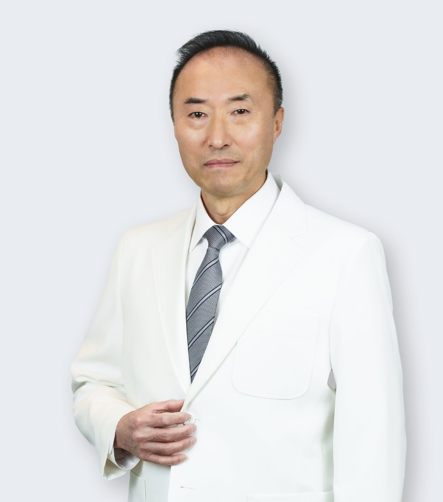
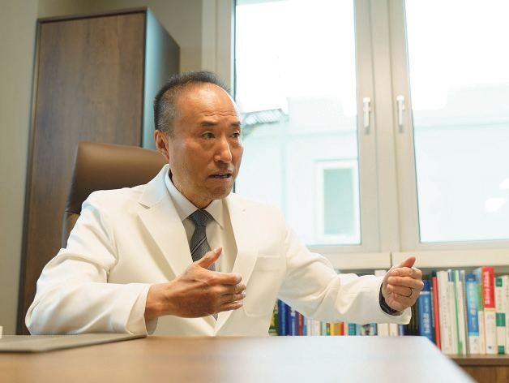

의료진
증상은 병동에서 주치의에게 바로 전달되어 당일 처방으로 대응하며, 의료진이 24시간 상주하고 당직 체계로 확인·처방합니다. 하일렌요양병원의 진료 의료진은 김성훈 수석병원장, 장익완 병원장, 이정경 원장입니다. 이춘기 자문의는 원내에 상근하지 않으며 자문으로 참여합니다.
- 진료 의료진
- 김성훈 수석병원장 · 장익완 병원장 · 이정경 원장
- 자문
- 이춘기 자문의 (원내에 상근하지 않으며 자문으로 참여합니다)
- 밤과 주말
- 의료진 24시간 상주, 당직 체계로 확인·처방
- 원내 검사
- 혈액검사 및 흉부 엑스레이 촬영, 당일 결과를 주치의가 확인
- 응급
- 발견, 초기 안정화, 상급 치료병원으로 신속 전원
- 문의
- 원내 상담실 · 카카오톡 채널 · 062-439-1000
김성훈 수석병원장
암 환자 분들께 따듯하고 편안한 공간을 제공해 드리겠습니다.
명상은 김성훈 수석병원장이 직접 진행합니다. 갑상선암 수술 후 목소리 변화는 이비인후과 진료를 하는 김성훈 수석병원장이 확인합니다.
약력
- 전남대학교병원 이비인후과 전공의 수련 및 전문의
- 전남대학교병원 이비인후과 전임의사 역임
- 첨단 미래이비인후과의원 원장
- 행복한이비인후과의원 원장
- 전남대학교병원 이비인후과 외래교수 역임
[디렉터 확인] 김성훈 수석병원장 절 3건 — ① 인사말 문안. 원문은 「암 환자 분들께 따듯하고 편안한 치료 공간을 제공해 드리겠습니다」이며 「치료」만 뺐습니다(B-16). 수석병원장의 말이므로 낫표 없이 두었고, 확정 문안을 받으면 낫표 인용으로 되돌립니다. ② 「입원 첫날 진료는 김성훈 수석병원장이 본다」 문장을 홈페이지에 쓸지. ③ 약력의 「이비인후과 전문의」 자격 명칭과 이름 아래 진료과 라벨(이비인후과)이 B-1(개별 진료과 전문의 원내 존재 서술 금지)에 걸리는지 — 라벨은 확정 전까지 빼고 본문의 「이비인후과 진료를 하는」 형태만 남겼습니다.
장익완 병원장
「섬기는 마음으로 진료에 임하겠습니다.」
약력
- 조선대학교 의과대학 졸업
- 강원대학교 의과대학 의학 석사, 박사
- 서울대학교병원 임상부교수 역임
- 엘리암요양병원 진료원장
- 누가요양병원 진료원장
- 대한림프부종학회 정회원
[디렉터 확인] 장익완 병원장 절 2건 — ① 약력 원문 중 정본: 「의학 석사, 박사」 대 「의학박사」, 「대한림프부종학회」 대 「대한림프 및 림프부종학회」, 「임상부교수」 대 「응급의학과 교수」. ② 이름 아래 진료과 라벨(응급의학과)을 쓸지 — B-1에 따라 확정 전까지 뺐습니다.

이정경 원장
「내면의 치유를 함께하여 일상 회복으로 안내해 드리기 위해 힘쓰겠습니다.」
약력
- 전남대학교 의과대학 졸업
- 광주보훈병원 인턴, 레지던트 수료
- 호스피스 완화의료 수료
- 가정의학과 전문의 취득
- 광주보훈병원 응급의학과 호스피스 진료부장 역임
[디렉터 확인] 이정경 원장 절 1건 — 이름 아래 진료과 라벨(가정의학과)과 약력의 「가정의학과 전문의」 자격 명칭이 B-1에 걸리는지. 라벨은 확정 전까지 뺐습니다.
[디렉터 확인] 세 분 약력 속 타 병원 실명 게재 여부 — 전남대학교병원 · 서울대학교병원 · 첨단 미래이비인후과의원 · 행복한이비인후과의원 · 엘리암요양병원 · 누가요양병원 · 광주보훈병원. B-10(타 병원 실명 전면 불사용, 2026-09-04 병원장 확정)의 약력 출처 표기 예외를 적용할지(W-3 미결).
[디렉터 확인] 이춘기 자문의 블록 게재 여부 — 국내 면허·소속 증빙 2건 확보 전이라 확정 전까지 비표시로 접어 둡니다.

이춘기 자문의
종양내과 자문의 협진
원내에 상근하지 않으며 자문으로 참여합니다. 자문의 칼럼은 공식 블로그에서 연재 중입니다.

약력
- 미국 아이오와 대학병원 종양내과 전임의
- 아칸소 대학병원 종양내과 골수이식분과 과장
- 미시간 대학병원 종양내과 교수
- 콜로라도 대학병원 종양내과 골수이식분과 과장
- 밴더빌트 의과대학 종양학 초청교수
[디렉터 확인] 자문의 블록을 게재할 때 확인할 3건 — ① 「종양내과」 표기(요양병원 표시 가능 진료과목에 없음, 법정 표기는 「내과」). ② 아칸소 대학병원 유지 여부. ③ 현재 페이지의 「30년 암 전문의 경험」 문구는 의료법 제56조②9 검토 대상이라 싣지 않았습니다. 되살릴지 여부.
입원·외래·단기입원 상담은 원내 상담실에서 안내합니다.
제공 하일렌요양병원 · 검토 [디렉터 확인] 검토 의료진 · 검토일 [디렉터 확인] · 갱신 2026-10-05